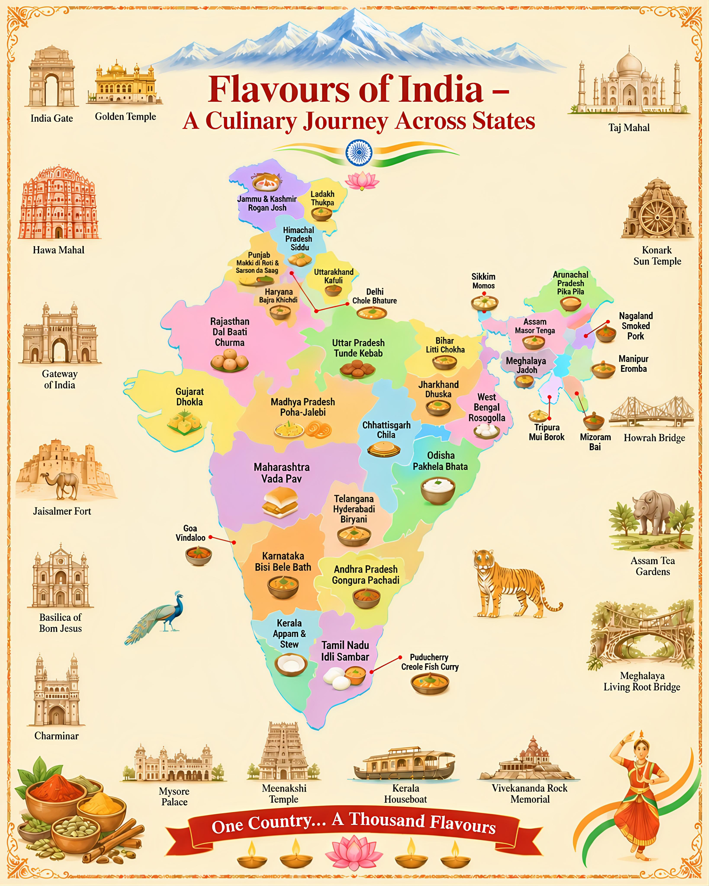

India is a land of diverse cultures, traditions and delicious food. Every state has its own unique flavours, ingredients and cooking styles. From spicy street food to traditional sweets, Indian cuisine has something special for everyone.
A Journey Through India's Culinary Heritage. Explore every Indian state through its famous food, traditional recipes and unique culinary traditions.

Explore India's rich culinary heritage, where every dish tells a story of culture, tradition and taste.
Let's begin our food journey by exploring India's regions and discovering their famous dishes.
North Indian cuisine is known for its rich gravies, aromatic spices and delicious breads.
Famous Dishes: Butter Chicken, Chole Bhature, Dal Makhani and Amritsari Kulcha.
South Indian cuisine is famous for rice-based dishes, coconut, tamarind and traditional spices.
Famous Dishes: Dosa, Idli, Hyderabadi Biryani, Puttu and Pongal.
Eastern Indian cuisine offers a wonderful combination of rice, fish, sweets and traditional delicacies.
Famous Dishes: Macher Jhol, Litti Chokha, Rasgulla and Momos.
Western Indian cuisine brings together sweet, spicy and tangy flavours through its traditional dishes.
Famous Dishes: Dhokla, Pav Bhaji, Dal Baati Churma and Goan Fish Curry.
Indian food is more than just a meal. It represents our traditions, celebrations and memories.
Enjoy some of India's most loved street foods!
Pani Puri | Vada Pav | Kachori | Jhal Muri
Discover the sweetness of India's traditional desserts!
Gulab Jamun | Jalebi | Mysore Pak | Payasam
Click here and write your favourite traditional Indian food!
The word cuisine refers to a style of cooking associated with a particular region or culture.
India's food culture is as diverse as its people. Every dish has a story waiting to be discovered!
One Country
Many Regions
Countless Dishes
Endless Flavours!
Want to see how traditional Indian dishes are prepared?
Watch a cooking video and discover new recipes.
India's rich cultural heritage is not only reflected in its food but also in its traditional music. Enjoy this beautiful melody that brings a touch of India's culture and traditions to life.
Discover more about India's food and culture through Incredible India .
FLAVOURS OF INDIA
Every Region Has a Story to Tell.
One Nation. Countless Flavours. Endless Stories.